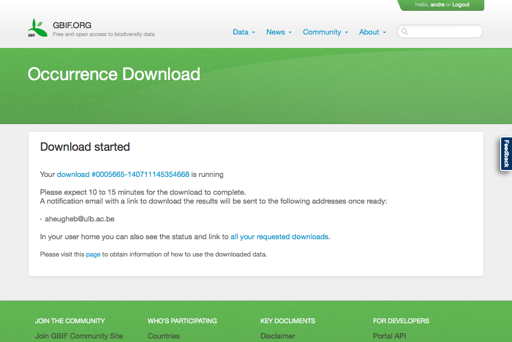

Global Biodiversity Information Facility
Free and Open Access to Biodiversity Data
discover, query, download and use GBIF mediated data
Seminar at Biodiversity Research Centre, UCL
20th Novembre 2014

André Heughebaert
Belgian Biodiversity Platform
Contents
1. About GBIF
- GBIF arose from a recommendation in 1999 by the Biodiversity Informatics Subgroup of the Megascience Forum, set up by the Organization for Economic Cooperation and Development (OECD).
- GBIF vision:
"A world in which biodiversity information is freely and universally available for science, society and a sustainable future." - By encouraging and helping institutions to publish data according to common standards, GBIF enables research not possible before, and informs better decisions to conserve and sustainably use the biological resources of the planet.
1. About GBIF
Governance
- GBIF is an international open data infrastructure, funded by governments.
- It operates through a network of nodes, coordinating the biodiversity information facilities of Participant countries and organizations, collaborating with each other and the Secretariat to share skills, experiences and technical capacity.
- Secretariat is located at Copenhagen, Denmark.
- Governing board is convened once a year.
1. About GBIF
Key Documents
- Participants countries sign a non-binding Memorandum of Understanding
- Data Publishers sign the Data Sharing agreement
- Data Users sign the Data Use agreement
1. About GBIF
Participants

53 Countries Participants + 40 Associated Participants
2. Definitions
- Open data is the idea that certain data should be freely available to everyone to use and republish as they wish, without restrictions from copyright, patents or other mechanisms of control.
- (Species) Occurrence Data: evidence of the presence(or absence) of a species at certain time, at certain place.
- (Species) Checklist: A list of accepted (or not) taxa assembled for a certain purpose.
- DarwinCore Archive (DwC-A): is a Biodiversity informatics data standard that makes use of the Darwin Core terms to produce a single, self-contained dataset for species occurrence or checklist data.
- Metadata: Data about the data such as author, geographic and time scope, methodology...
3. Services

Portal for visitors and webservices for applications.
3. Services
GBIF.org
- Data Users
- Discovery
- Query
- Download
- Data Publishers
- Usage statistics
- Indexing issues
3. Services
Web services (JSON)
- Species names (fuzzy) matching
- Data Download
- Registry (metadata)
{"usageKey":2440447,"scientificName":"Tursiops truncatus (Montagu, 1821)",
"canonicalName":"Tursiops truncatus","rank":"SPECIES","synonym":false,
"confidence":100,"matchType":"EXACT","kingdom":"Animalia","phylum":"Chordata",
"order":"Cetacea","family":"Delphinidae","genus":"Tursiops","species":"Tursiops truncatus",
"kingdomKey":1,"phylumKey":44,"classKey":359,"orderKey":733,"familyKey":5314,
"genusKey":2440446,"speciesKey":2440447,"class":"Mammalia"}
3. Services
Mendeley GBIF Library
Close to 2.000 peer-reviewed research publications have cited GBIF as a source of data, in studies spanning the impacts of climate change, the spread of pests and diseases, priority areas for conservation and food security. About 20 such papers are published each month.
3. Services
Other tools
- Integrated Publishing Tookit for Publishers
- Peer reviewed Data papers
- Data portal for Participants Country or thematics Nodes
Live Demo
- Signin to GBIF.org
- How to Dowload?
- Explore data+metadata
- Play with data
- Paraguayan Types : SQLite, LibreOffice, multimedia
- Milvus milvus : SQLite, OpenRefine, QGIS
- ARABEL : SQLite, QGIS
- Feedback to GBIF and Data Publishers
4. Discovering
- Prerequisite:
- Signin on www.gbif.org
- Accept the Data Use Agreement
4. Discovering
Data distribution
Density of georeferenced species occurrence records through GBIF
500 millions occurrences records on 1.5 million species
4. Discovering
Explore occurrences
- Explore Species (eg Milvus milvus)
- Explore Datasets (eg ARABEL)
- Explore by Countries(eg Paraguay)
5. Querying

Adding Multimedia filter on Paraguayan Types
6. Downloading

6. Downloading

- Citations.txt: How to cite your sources?
- Occurrence.txt: Data indexed by GBIF
- Rights.txt: Some possible restriction of use
- Verbatim.txt: Original Data by data publisher
- Multimedia.txt: related Mutlimedia URL
6. Downloading
Indexed
931143641 PRESERVED_SPECIMEN PY Tetragonoschema Thomson, 1857 National Museum of the Czech Republic Paraguay San Bernardino LECTOTYPE 167acd5c-9459-4e2d-86a1-ee9d6f5e5893 BIOCASE 2014-07-30T20:50Z 2014-11-07T14:19Z
Verbatim
931143641 PreservedSpecimen Paraguay Tetragonoschema medium Obenberger, National Museum of the Czech Republic Paraguay San Bernardino 1922 lectotype
6. Downloading
Multimedia
Tetragono schema Thomson, 1857. Lectotype from National Museum of the Czech Republic
885974538 http://collections.mnh.si.edu/media/index.php?irn=10064047
888459823 http://collections.mnh.si.edu/media/index.php?irn=10089749
931143641 StillImage image/jpeg http://pm.nm.cz/OpenUpData/Entomologie/Fotky/E143.jpg Creative Commons (CC-by)
888458933 http://collections.mnh.si.edu/media/index.php?irn=10050268
6. Downloading
Back to your downloads

7. Using
Data User Agreement
- The quality and completeness of data cannot be guaranteed. Users employ these data at their own risk.
- Users shall respect restrictions of access to sensitive data.
- In order to make attribution of use for owners of the data possible, the identifier of ownership of data must be retained with every data record.
- Users must publicly acknowledge, in conjunction with the use of the data, the Data Publishers whose biodiversity data they have used. Data Publishers may require additional attribution of specific collections within their institution.
- Users must comply with additional terms and conditions of use set by the Data Publisher. Where these exist they will be available through the metadata associated with the data.


7. Using
Free to use Tools


- Stats Computing: R
- GIS: Quantum GIS
- Spreadsheet: LibreOffice, Open Refine
- Store/Organize: SQLite, PostgreSQL, NoSQL
- Scripting language : Python, Ruby...
7. Using
SQLite
7. Using
LibreOffice
7. Using
OpenRefine
7. Using
QuantumGIS
7. Using
Featured GBIF Data Use


7. Using
Feedback
8. Publishing
Data publishing is the act of making data available on the Internet, so that they can be accessed, downloaded, analysed and reused by anyone for research or other purposes.
8. Publishing
Why publish my data?
- You contribute to global knowledge about biodiversity
- You receive proper credit for creating/curating data
- You increase visibility of publishing institutions through good metadata authoring
- You create new opportunities for collaboration
Thank you for your attention
André Heughebaert, Belgian Biodiversity Platform
Made with reveal.js - HTML Presentations made easy